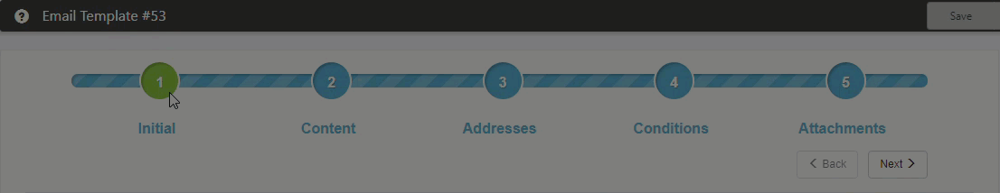

The Email Templates dashboard opens showing a list of published Email Templates.
The Add Email Template workflow is presented, with a series of steps to start generating your new template.
Email templates enable

Email templates enable
This topic gets you started. After you click Add, follow the procedures to complete the five-step process.
To get started: